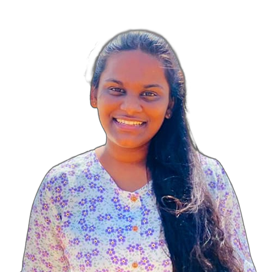

ABOUT ME
I am a Undergraduate student of University of Sri Jayewardenepura.I am following BSc(Hons) degree in Information Technology. I love being inventive and creative. I've always been interested in technology and how it can be used to solve real-world problems. I have been continually expanding my knowledge and exploring new programming languages and tools.
Aside from my academic interests, I enjoy reading, hiking, and spending time with my friends and family. I also volunteer at a local nonprofit organization, where I help with fundraising and event planning.
In the future, I hope to continue my studies and pursue a career in IT Industry. I'm excited about the possibilities that technology can bring, and I want to be a part of the movement that pushes boundaries and creates new solutions to complex problems.
Information
EDUCATION
2020 - Present
Bachelor of Science (Honours) in Information Technology
2018 - 2019
Information & Communication Technology
2005 - 2018
G.C.E. Advanced Level
RESEARCH
Classification of SMS Messages using Machine Learning and Natural Language Processing
EXPERIENCE
Media Committee Member
The IEEE Student Branch of the University of Sri Jayewardenepura is the latest addition to the Student Branches of the IEEE Sri Lanka Section. I am currently working as a graphic designer in Media Unit in IEEE Student Branch. I have participated in many sessions, projects, and workshops to educate technical and professional Skills.
Assistant Director of IT
The Leo Club of District 360 C2 University of Sri Jayewardenepura is encouraged youths to develop leadership qualities by participating in social activities. As an IT Assistant Director, some of my responsibilities include designing flyers and managing our club's website and groups.
Taskmaster of Programming Division
Jupura Voice is an Official Media and Broadcasting Unit of the University of Sri Jayewardenepura. As a Taskmaster, our main focus is on marketing. We are designing flyers in collaboration with club members and managing our graphic design groups. Gained valuable experience by participating in projects organized by the Society, such as "Warnarawa," V-speak, and Logico.
Graphic Designer
J'pura Flames(Official Media Grid) gaining the best coverage for sports and events at our University. We worked as a crew and support all functions and events of the University.